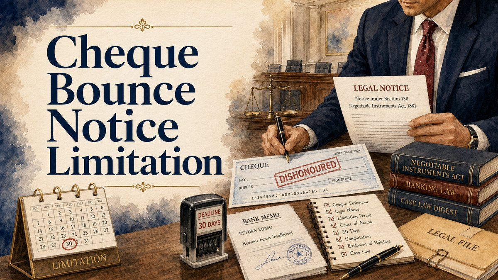

A Section 138 notice is not an ordinary payment reminder. The payee must make a written demand for the legally relevant cheque amount within the prescribed thirty days, retain reliable dispatch and service evidence, give the drawer fifteen days after receipt of notice and file any resulting complaint within one calendar month of the statutory cause of action. This article focuses on notice validity and time computation. Our full Section 138 guide addresses the offence, debt presumptions, territorial jurisdiction and trial.

Three separate statutory clocks
- Thirty days for written demand: Section 138 proviso (b) requires notice within thirty days after the payee or holder in due course receives bank information about dishonour.
- Fifteen days to pay: Under proviso (c), the drawer has fifteen days from receipt of the notice to make payment of the amount demanded under Section 138.
- One calendar month for complaint: Section 142(1)(b) ordinarily requires the written complaint within one month from the cause of action arising after the fifteen-day period expires. The court has a statutory power to entertain a delayed complaint on sufficient cause, which is not automatic.
These periods are not a single 45-day or 75-day countdown from the cheque date. Record each triggering event independently.
1. The date of bank information, not merely the memo's printed date
Section 138(b) starts the demand-notice clock when the payee or holder in due course receives information from the bank that the cheque has been returned unpaid. Preserve the original return memo, the bank communication or alert, statement, and any record showing when information was actually received. The date on the cheque, its deposit date, the return-memo date and the date the payee received that information may not be identical.
First verify that the cheque was presented within its applicable validity: Section 138(a) refers to six months from the date of drawing or the cheque's shorter validity period, whichever is earlier. This presentation requirement is distinct from the thirty-day notice deadline. Use the relevant banking rules for the type of instrument rather than assuming the statutory six-month reference governs every cheque.
2. What the demand notice must contain
At minimum, establish the payee/holder, correct drawer, cheque number and date, bank, exact cheque amount, the fact of dishonour, and a clear written demand for payment of the statutory amount. Check the final demand paragraph against the cheque and all schedules. Where a business entity is the drawer, distinguish the drawer company from individuals against whom Section 141 responsibility may be alleged. A notice to an unrelated entity cannot be treated as interchangeable with a demand to the proper drawer.
In Suman Sethi v. Ajay K. Churiwal (2000), the Supreme Court held that separately specified and severable additional claims, such as interest or costs, need not invalidate a notice that clearly demands the cheque amount. But an omnibus demand that does not identify the cheque amount may fail. In Kaveri Plastics v. Mahdoom Bawa Bahrudeen Noorul, 2025 INSC 1133, the Supreme Court confirmed that demanding an incorrect sum equal to twice the cheque amount invalidated the notice on its facts. Characterising the error as typographical did not save the notice. The precise amount in the operative demand therefore warrants independent verification.
If any amount was paid after issuance of the cheque but before its presentation, assess the remaining enforceable liability and applicable Section 56 endorsement principles before choosing the amount and presenting or demanding payment. A notice checklist must incorporate genuine credits and part-payments rather than mechanically copying the face value while concealing adjustments.
3. Pre-dispatch audit: dates, parties and figures
| Record | What to check | What may go wrong |
|---|---|---|
| Drawer and address | Bank account, correct legal name, verified postal address | Notice issued against or sent to wrong party |
| Cheque particulars | Number, date, amount, bank and return memo | Document or instrument mismatch |
| Actual cheque amount | Amount in cheque against the operative demand paragraph | Invalid or ambiguous statutory demand |
| Additional claims | Separate itemisation of costs or interest | Unclear omnibus demand |
| Thirty-day limit | Bank information received and dated sending evidence | Untimely notice |
| Dispatch package | Signed notice, final annexures and postal receipts | No reliable record of what was sent |
For several dishonoured cheques, prepare a cheque-wise table of amount, bank information, notice, dispatch, service and payments. A consolidated demand can create avoidable ambiguity if distinct cheques and obligations are not identified accurately.
4. How to prove notice was delivered or deemed served
Preserve the final signed notice and correctly addressed envelope, registered-post booking receipt, tracking identification, dated delivery status and physical acknowledgement when available. If returned, retain the original envelope showing the postal endorsement, not only a screenshot of the status. Keep reliable address evidence from agreements, invoices, business records, correspondence or other authorised sources.
The Supreme Court in C.C. Alavi Haji v. Palapetty Muhammed (2007) explained the rebuttable statutory presumption of service under Section 27 of the General Clauses Act for registered post correctly addressed and prepaid. Returned endorsements such as refusal or non-availability do not necessarily defeat service. Equally, the presumption can be rebutted; an incorrect address, missing dispatch record or contrary evidence deserves examination. A draft date, dispatch date and actual or deemed receipt date must not be treated as synonyms.
Email or courier messages may help document communications, but avoid assuming a WhatsApp screenshot or an unsigned tracking page alone always establishes service. The legally supportable date of actual or deemed receipt governs the later time calculation.
5. Fifteen-day payment opportunity after receipt
Under Section 138(c), the drawer must be given the full fifteen-day payment period after the notice is received. Exclude the receipt date in computing that period. A notice served on 24 January 2026, for illustration, gives the drawer 25 January through 8 February 2026 to make statutory payment. If the amount remains unpaid, the cause of action arises on 9 February 2026.
This example assumes actual proved delivery and no complications; it does not establish a service date when postal delivery is disputed, refused or deemed. Separate the date of notice issuance from receipt. If the drawer pays the statutory amount within the applicable fifteen days, the necessary non-payment condition is not met. A bare promise to pay, a notice reply or negotiation alone is not necessarily payment.
6. When does the Section 142 complaint period expire?
Section 142(1)(b) prescribes one month from the date of cause of action, not universally thirty days. Saketh India Ltd. v. India Securities Ltd. (1999), approved in Econ Antri Ltd. v. Rom Industries Ltd. (2013), requires exclusion of the date when cause of action arises when computing the calendar month. The example above has cause of action on 9 February 2026; its ordinary one-month deadline would be 9 March 2026, subject to the actual procedural and calendar facts.
Verify filing mode, closure/holiday rules, receipt and payment records for the specific complaint. Section 142(1)(b) permits the Magistrate to take cognizance after the prescribed period if the complainant satisfies the court that sufficient cause prevented timely filing; do not plan around discretionary condonation.
7. Model notice-service date chart
| Event | Evidence to retain | Legal relevance |
|---|---|---|
| Cheque presented | Cheque and deposit details | Validity of presentation |
| Dishonour information received | Memo, bank advice, account alert | Thirty-day notice trigger |
| Demand dispatched | Final notice, envelope and postage receipt | Section 138(b) compliance |
| Notice received / deemed served | Postal evidence, return cover and address proof | Fifteen-day payment trigger |
| Fifteen-day window expires | Recorded computation and payment records | Whether a cause of action arises |
| Complaint filed | Calculation, signed complaint and filing receipt | Section 142(b) limitation |
Each instrument may need an independent timeline. Re-presentation within cheque validity can raise separate questions under MSR Leathers v. S. Palaniappan (2012), but a later dishonour does not excuse neglecting the exact facts and statutory periods of earlier steps.
8. The drawer's immediate response to notice
The drawer should preserve the original notice and envelope, receipt date, account information, bank and cheque details, proof of any earlier or subsequent payment, agreements and underlying transaction documents. Verify whether the demanded amount is correct, whether the liability was legally enforceable when the cheque was presented, and whether the notice was addressed and served properly. A reply should respond to provable facts instead of making a general denial.
If court summons have already issued, different procedural questions arise; see the separate summons-stage defence guide. Settlement discussions should be documented precisely and should not be mistaken for automatic extension of statutory limitation.
9. Common notice and limitation mistakes
- Counting thirty days from the cheque date, not the date dishonour information was received.
- Making a vague or incorrect monetary demand without identifying the cheque amount.
- Copying figures or party names from another notice without checking the instrument.
- Sending to an uncertain address and discarding an unserved registered envelope.
- Counting fifteen days from the date of sending instead of actual or deemed receipt.
- Treating the complaint month as exactly thirty days in all cases.
- Mixing cheques, payments and notice dates into one unexplained summary.
- Assuming a reminder, reply or settlement discussion suspends statutory filing time.
Conclusion
The notice stage requires a correct statutory demand, timely communication, an evidence-based service position and precise deadline calculations. Underlying debt, presumptions, company liability and trial procedure remain separate matters. Review the cheque and notice record together before taking a procedural step.
Last updated on: 10/10/2026 at 16:30
Useful Internal Pages
References / Sources
- Negotiable Instruments Act, 1881 - Sections 56, 138, 141 and 142.
- Kaveri Plastics v. Mahdoom Bawa Bahrudeen Noorul, 2025 INSC 1133 - incorrect demand amount.
- Suman Sethi v. Ajay K. Churiwal, (2000) 2 SCC 380 - distinguish statutory cheque demand and ancillary charges.
- C.C. Alavi Haji v. Palapetty Muhammed, (2007) 6 SCC 555 - registered-post service presumption.
- Saketh India Ltd. v. India Securities Ltd., (1999) 3 SCC 1 - computation of complaint filing period.
- Econ Antri Ltd. v. Rom Industries Ltd., (2014) 11 SCC 769 - exclusion of cause-of-action day.
- MSR Leathers v. S. Palaniappan, (2013) 1 SCC 177 - successive presentation.